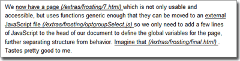

Improving the Printed Page
By Aaron Gustafson
When I was nearing completion of my last article, I printed off a copy of it for my wife to proofread for me. As it was an article for publication online, I had written it in HTML and printed it from the test server, taking advantage of my trusty print style sheet to make it look right.
About a page in, Kelly let out an annoyed sigh and posited “How do you expect me to read this with all of these URLs in the middle of everything?” It seems my zeal for linkage had come into conflict with my desire to improve print usability.
What’s a developer/husband to do? Fix it, of course. And so I dedicate this article to Kelly: may she continue to proofread my articles unimpeded.
Eric Meyer’s Printed Page
Many moons ago, Eric Meyer wrote a ground-breaking article for A List Apart, in which he offered up a little CSS2 nugget:
a:link:after,
a:visited:after {
content: " (" attr(href) ") ";
font-size: 90%;
}Using this rule in a print style sheet will cause any browser that understands CSS2 (Mozilla & Netscape, at the time, and most everything but IE now) to insert the value of an anchor’s href attribute, in-line, after the text, slightly smaller and flanked by parentheses:
This is incredibly helpful for users who print the page, as it alerts them to the destination of each link. When you have a paragraph with a lot of links (especially long ones), however, this technique hinders readability:
We can’t have that.
The plan
Having spent many years in academia and publishing, I’m partial to footnotes/endnotes. They are a standard convention in print, so it seems natural to go in that direction. Following this line of thinking, our objectives would be to
- collect all of the URIs referenced (
hrefs and citations) in a specific container within the page (after all, we probably don’t want to grab the navigation, etc.), - place the links (minding the duplicates) into an ordered list which can be dropped into an
id-ed container of our choosing, and - supply each reference with the corresponding footnote number as a superscript.
Luckily, all of this is well within our grasp when we access the DOM via JavaScript.
The script
Before we start scripting, we should outline detailed directions for ourselves in the code:
function footnoteLinks() {
// get the container & target
// create a heading for the footnotes
// create an <ol> to contain the footnotes
// create an array to store used links so we can check for duplicates
// create a variable to keep track of the number used for each link, so we
// have it for footnote references
// collect all of the elements in the specified container into an array
// cycle through the elements in that array, looking for hrefs and citations
// if a duplicate
// get the corresponding number from the array of used links
// if not a duplicate
// build the <li> and append to the <ol>
// store the link in the array
// increment the number variable
// build the <sup> & append after the reference
// append the heading and <ol> to the target
}This provides a pretty solid foundation, so let’s get building. We’ll tackle each task separately, starting by examining the function itself. We need to pass it two variables: one for the id of container we are grabbing the URIs from (containerID) and one for the id of the target container for our footnotes (targetID):
function footnoteLinks(containerID,targetID) {Now that we’ve added those arguments, we can quickly identify those containers in our script:
// get the container & target
var container = document.getElementById(containerID);
var target = document.getElementById(targetID);This will make things much simpler later on.
The heading for our content is up next. As we want it (as well as the rest of our generated markup) to show up in print only, we’ll class it “printOnly” (we’ll write the CSS rule for this later):
// create a heading for the footnotes
var h2 = document.createElement('h2');
addClass.apply(h2,['printOnly']);
var h2_txt = document.createTextNode('Links');
h2.appendChild(h2_txt);[Note: we are applying the addClass() function from the Easy! Designs jsUtilities package to class our elements.]
Now we can create our ordered list and those variables we need to help us keep track of what’s going on:
// create an <ol> to contain the footnotes
var ol = document.createElement('ol');
addClass.apply(ol,['printOnly']);
// create an array to store used links
// so we can check for duplicates
var myArr = []; // to store all the links
var thisLink; // to store each link individually
// create a variable to keep track of the number used for each link, so we
// have it for footnote references
var num = 1;Now for the heavy lifting. We need to iterate through all of the elements in the container, looking for href and cite attributes. It is good to note that in XHTML 2.0 we will be able to make anything a link and we can already put a cite attribute on almost anything, not just <blockquote>s and <q>s, so we should not restrict ourselves to only collecting anchors, block quotes and inline quotations:
// collect all of the elements in the specified container into an array
var coll = container.getElementsByTagName('*');Now we can loop through that collection, looking for href and cite attributes:
// cycle through the elements in that array, looking for hrefs and citations
for (var i=0; i<coll.length; i++) {
// check for our attributes
if ( coll[i].getAttribute('href') ||
coll[i].getAttribute('cite') ) {
// grab the reference
thisLink = coll[i].getAttribute('href') ? coll[i].href
: coll[i].cite;That looks good so far. Now we need to create our superscript:
// build the <sup> & append after the reference
var note = document.createElement('sup');
addClass.apply(note,['printOnly']);We’re going to assume each URI reference will be unique for now, revisiting the script later to check for duplicates:
var note_txt = document.createTextNode(num);
note.appendChild(note_txt);We’re also going to assume we are dealing with anything but <blockquote>s for right now and we’ll append the reference inline before the referencing element’s next sibling:
coll[i].parentNode.insertBefore(note, coll[i].nextSibling);We create a list item to contain the URI and then push that URI to the waiting array (so we can use it to reference duplicates):
// build the <li> and append to the <ol>
var li = document.createElement('li');
var li_txt = document.createTextNode(thisLink);
li.appendChild(li_txt);
ol.appendChild(li);
// store the link in the array
myArr.push(thisLink);[Note: not all browsers natively support the push method, but you can help such unfortunate browsers deal by writing a script to define the method for them. It is also available in the jsUtilities package.]
Now we increment our number to prepare for the next reference and close the loop:
// increment the number variable
num++;
}Finally, we append our heading and list to the target:
target.appendChild(h2);
target.appendChild(ol);
}We have a little tidying up to do before we wrap the script. First of all, we need to handle duplicate URI references. We accomplish this by looking through that array (myArr) we created for keeping track of our used URIs. We can do that with the JavaScript port of PHP’s inArray function (also available in the jsUtilities package). inArray looks for a value (needle) in whatever array (haystack) we apply it to and returns “true” (with the index value) if found and “false” if not found. We use it when we are looping through the collection:
for (var i=0; i<coll.length; i++) {
if ( coll[i].getAttribute('href') ||
coll[i].getAttribute('cite') ) {
thisLink = coll[i].getAttribute('href') ? coll[i].href
: coll[i].cite;
var note = document.createElement('sup');
addClass.apply(note,['printOnly']);
var note_txt;
var j = inArray.apply(myArr,[thisLink]);
if ( j || j===0 ) { // if a duplicate
// get the corresponding number from the array of used links
note_txt = document.createTextNode(j+1);
} else { // if not a duplicate
// build the <li> and append to the <ol>
var li = document.createElement('li');
var li_txt = document.createTextNode(thisLink);
li.appendChild(li_txt);
ol.appendChild(li);
// store the link in the array
myArr.push(thisLink);
note_txt = document.createTextNode(num);
// increment the number variable
num++;
}
note.appendChild(note_txt);
…
}
}In the snippet above, we are looking to see if thisLink is found in myArr and then handling the superscript accordingly. If thisLink is found (j is “true”), we make the superscript j+1 (as array indexing starts at 0 and ordered lists start at 1) and we’re done. If thisLink is not found (j is “false”), we need to create the list item for the reference, append it to the <ol>, push thisLink to myArr, and create our superscript reference (incrementing num afterwards). It is important to note that, as inArray returns the array index, the value of j could be 0 if it is the first item in the array. JavaScript will interpret this as false if we were to use the “is equal to” operator (j==0), so we use the “is identical to” operator (j===0) to be able to pick up duplication of the first URI reference in a given page.
The next step in tidying-up involves adding our reference in block-level elements. If you are making a block-level quote of some sort, to be truly semantic, it needs to be in a <blockquote>. Your <blockquote> could contain any type of block-level element, most commonly paragraphs (<p>) and lists (<ul>, <ol>, <dl>). Being that we would want to have our reference superscript appear at the end of the last line of text (to maintain common typographic style), we need to find the last child of the <blockquote> which is a text-containing block-level element. We can accomplish this with the function lastChildContainingText (you guessed it, in jsUtilities):
function footnoteLinks(containerID,targetID) {
…
if (coll[i].tagName.toLowerCase() == 'blockquote') {
var lastChild = lastChildContainingText.apply(coll[i]);
lastChild.appendChild(note);
} else {
coll[i].parentNode.insertBefore(note, coll[i].nextSibling);
}
…
}
Finally, we can round out our script by making it degrade gracefully in browsers that don’t support the methods we use in this function –
function footnoteLinks(containerID,targetID) {
if (!document.getElementById ||
!document.getElementsByTagName ||
!document.createElement) return false;
…
}– and pages that contain neither our target nor container elements:
function footnoteLinks(containerID,targetID) {
if (!document.getElementById ||
!document.getElementsByTagName ||
!document.createElement) return false;
if (!document.getElementById(containerID) ||
!document.getElementById(targetID)) return false;
…
}Now, we simply set the function to run on page load –
window.onload = function() {
footnoteLinks('container','container');
}– and create a style for .printOnly in our screen style sheet –
.printOnly {
display: none;
}– and you can see the finished product.
Contingencies
This process, of course, assumes JavaScript is available for use, but what if it isn’t? To take this into account, we can keep Eric’s content generation CSS intact, using that as a fall-back to our script, and removing it when the script runs successfully.
This is accomplished by retaining the original CSS declarations for generating the href content and then, when the script runs, we class-ify <html> as “noted.” We then add a rule to our print style sheet to disable the content generation when the links in question are descendants of html.noted:
html.noted a:link:after,
html.noted a:visited:after {
content: "";
}Wrapping up
So there you have it, a nice, clean, printable document with all links and citations collected into footnotes. Use it, enjoy it, and improve on it. For example, you could add in the ability to ignore particular links class-ed as “ignore.” Get creative and let us know what you come up with.
You can download the latest compressed version of footnoteLinks from its homepage or download the working files for this article from this site. All of the JavaScript prototypes used in this article are contained in jsUtilities 2.1, which is available as a compressed download from its homepage.